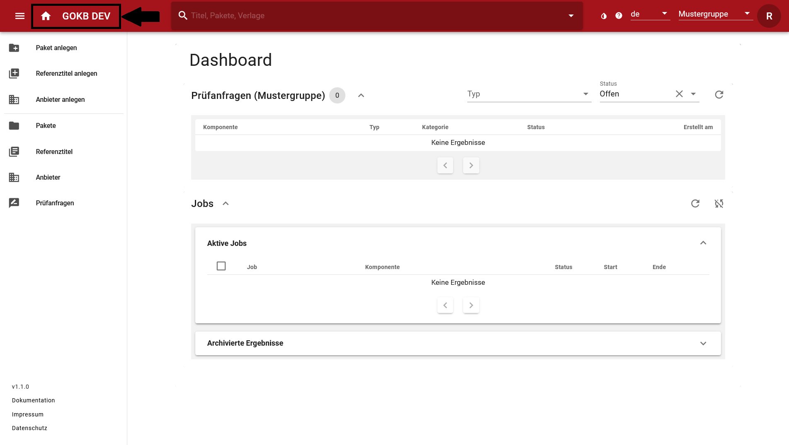

Arbeiten mit Prüfanfragen
Prüfanfragen sind zentrale Workflow-Komponenten der GOKB. Über Prüfanfragen wird Ihnen mitgeteilt, ob bei der Bearbeitung oder dem Einspielen von Komponenten Fehler aufgetreten sind oder mögliche Ungereimtheiten entdeckt wurden. Auch einfache Informationen und Rückmeldungen werden Ihnen in Form von Prüfanfragen zurückgemeldet.
Das Ziel jeder Kuratorengruppe sollte sein, alle Prüfanfragen zu einer Paketeinspielung anzusehen, ggf. zu bearbeiten und zu schließen. Dabei ist zu beachten:
- Die Bearbeitung einer Prüfanfrage erfordert - abhängig von der Art der Prüfanfrage - eine Bearbeitung der jeweiligen Komponente. Die Prüfanfrage muss danach manuell geschlossen werden.
- Viele Prüfanfragen dienen nur zur Information und können ohne Bearbeitung geschlossen werden.
- Die GOKB reagiert sehr sensibel auf mögliche Ungereimtheiten in den Daten. Gegebenenfalls können so von dem System Prüfanfragen geöffnet werden, die nur vermeintlich einen Fehler beschreiben, obwohl alles korrekt ist. Diese können nach Prüfung geschlossen werden.
Prüfanfragen finden
In der GOKB gibt es drei Wege, um Prüfanfragen zu finden.
- Im Dashboard
- In der Paketsicht
- In der Prüfanfragen-Sicht
Dashboard
Im Dashboard werden alle Prüfanfragen angezeigt, die der ausgewählten Kuratorengruppe zugeordnet sind.

In der Paketsicht
Im Reiter "Zusammenfassung" in der Paketsicht sind alle Prüfanfragen aufgeführt, die zum augenblicklich ausgewählten Paket gehören. Das umfasst einerseits Prüfanfragen, die das Paket insgesamt oder einzelne Pakettitel betreffen, andererseits Prüfanfragen der verknüpften Referenztitel. Die Anzeige der jeweiligen Prüfanfragen können Sie durch den Schalter wechseln. Es erscheint dann eine Ergebnisliste, von der aus Sie in die Vollansicht zur Bearbeitung gelangen oder auch ausgewählte Anfragen direkt schließen können.
Durch die Bearbeitung der verknüpften Referenztitel können Sie direkt erkennen, ob bei diesen Titeln beispielsweise Dubletten oder fehlerhafte Identifikatoren vorliegen und diese selbst beheben bzw. der zuständigen Kuratorengruppe melden. Das hat den Vorteil, dass neben den korrigierten Paketdaten auch korrekte Referenzdaten in den ERM-Systemen verarbeitet werden.
In der Prüfanfragen-Sicht
Zur Prüfanfragen-Sicht gelangen Sie über das Menü. Hier können Sie alle Prüfanfragen der GOKB finden und nach folgenden Kriterien filtern:
- Ursache - Ein Freitextfeld
- Kuratorengruppe - Auswahl der Kuratorengruppe, der die Prüfanfrage zugeordnet ist.
- Betroffene Komponente - Ein Auswahlfeld, in dem alle Komponenten (Anbieter, Pakete, Titel etc.) suchbar sind.
- Kategorie - Eine Auswahl der Kategorien der Prüfanfragen. Eine Übersicht der Kategorien finden Sie weiter unten.
- Status - Eine Auswahl des Status der Prüfanfrage (Offen, Geschlossen, Gelöscht).
Prüfanfragen einsehen und bearbeiten
In der jeweiligen Ergebnisliste finden Sie eine Übersicht über die Komponente, den Komponententyp (wie Journal, Paket etc.), die Kategorie der Prüfanfragen und das Erstellungsdatum.
Über die Checkbox zu Beginn jeder Zeile können Sie eine oder mehrere Prüfanfragen anwählen und über den Button "Schließen" den Status auf "Geschlossen" setzen.
Für eine Detailsicht der Prüfanfrage wählen Sie den Link unter der Spalte "Betroffene Komponente" an.
Detailsicht
In der Detailsicht erhalten Sie verschiedene Informationen und Optionen:
- Erstellt am: Das Feld zeigt das Datum der Erstellung der Prüfanfrage.
- Status: Der Status ("Offen" oder "Geschlossen") gibt den Status der Prüfanfrage an. Wenn eine Prüfanfrage bearbeitet ist, d. h. die geprüfte Komponente von Ihnen als korrekt angesehen wird (nach einer Korrektur oder weil die Prüfanfrage keine weitere Bearbeitung erfordert), können Sie den Status auf "Geschlossen" setzen.
- Kuratorengruppe: Es wird die verantwortliche Kuratorengruppe in diesem Feld angezeigt.
- Durchgeführte Aktion: Dieses Feld gibt an, wie die GOKB automatisiert mit dem festgestellten Problem verfahren ist. Ist der Eintrag leer, hat die GOKB nichts unternehmen können.
- Ursache: Dieses Feld gibt die Ursache an, die zum Öffnen der Prüfanfrage geführt hat.
- Info-Box (To Do): Falls eine Handlung von Ihnen als Nutzer*in erforderlich ist, erhalten Sie hier eine Anleitung. Ist der Eintrag leer, diente die Prüfanfrage lediglich zu Ihrer Information. Sie können sie dann über "Anfrage abschließen" beenden.
- Betroffene Komponente: Dieses Feld gibt die genaue Komponente an, d. h. welches Paket, welche Plattform oder welcher Anbieter für die Prüfanfrage ursächlich ist.
- Weitere betroffene Komponenten: Gibt es weitere Komponenten neben der zuvor angegebenen, die für die Prüfanfrage ursächlich ist, so werden diese hier angezeigt. Sie können weitere Komponenten selbständig verknüpfen.
Sie können die Prüfanfragen an dieser Stelle schließen und die Detailsicht über den Button "Aktualisieren" wieder verlassen.
Typen von Prüfanfragen
Hier finden Sie eine Auflistung von aktuellen Prüfanfragen. Sie können über den Titel der Prüfanfrage direkt zum passenden Eintrag springen.
- Namensraumkonflikt
- Fehlerhafter Name
- Idendifikatoren-Konflikt beim KBART-Import
- Referenztitelkonflikt
- Uneindeutige Titelübereinstimmung
- Identifikatoren-Konflikt (ID ergänzt)
Anleitung zur Bearbeitung von Prüfanfragen
Im Folgenden erklären wir Ihnen in einzelnen Schritten, wie Sie bestimmte Typen von Prüfanfragen bearbeiten können.
Namensraumkonflikt
Der Konflikt ist entstanden, weil der Pakettitel eine e-ISSN enthält, die einer bestehenden p-ISSN des Referenztitels entspricht, oder umgekehrt.
- In der Kachel wird der zu korrigierende Titel mit den enthaltenen Identifikatoren angezeigt. Durch anklicken des Kästchens in der Tabelle wählen Sie die zu löschende(n) ISSN(s) aus.
- Die Löschung aktivieren Sie über den Button "Titeländerungen abschicken".
- Um einen neuen Identifikator hinzuzufügen, klicken Sie auf den Titel. Es öffnet sich dann in einem neuen Fenster die Detailansicht.
- Im Anschluss klicken Sie auf den Button "Prüfanfrage abschließen".
Hinweis: Print- und Onlineversion einer Zeitschrift müssen mit eigenen ISSNs ausgezeichnet werden. Verschiedene Nachweissysteme benutzen jedoch eine ISSN fälschlich für beide Versionen. Die autorisierten ISSNs finden Sie unter https://portal.issn.org/.
Fehlerhafter Name
Der Konflikt ist entstanden, weil der Name des Titels fehlerhafte Zeichen enthält.

- Klicken Sie auf das Stift-Icon in der Kachel, das hinter dem zu prüfenden Titel angezeigt wird. Sie können so direkt im Feld die fehlerhaften Zeichen im Titelnamen anpassen. Die Korrektur wird übernommen, indem Sie den Haken am Ende des Feldes aktivieren.
- Speichern Sie die Änderung des Titels über den Button "Titeländerungen abschicken".
- Überprüfen Sie ebenfalls die in der Kachel angezeigten Paket- bzw. Referenztitel. Mit einem Klick auf den Namen öffnet sich die Detailansicht in einem neuen Fenster.
- Die Prüfanfrage beenden Sie über den Button "Prüfunanfrage abschließen".
Hinweis: Fehlerhafte Zeichen im Titel tauchen immer dann auf, wenn KBART-Dateien eingespielt werden, die nicht UTF-8-konform sind. In der Dokumentation finden Sie eine Anleitung, wie man mit einem Tabellenkalkulationsprogramm Dateien in UTF-8 umwandelt und speichert. Für die korrekte Titelaufnahme kann die Verzeichnung in externen Quellen helfen.
Identifikatoren-Konflikt beim KBART-Import
Der Konflikt ist entstanden, weil die GOKB zwar den KBART-Datensatz einem bestehenden Pakettitel zuordnen konnte, aber sich ein oder mehrere andere Identifikatoren unterscheiden.
- Neben dem zu prüfenden Pakettitel werden Ihnen bereits bestehende Pakettitel angezeigt, die anhand übereinstimmender Identifikatoren zugeordnet werden konnten. Gleichen Sie die Pakettitel miteinander ab und achten Sie dabei auf mögliche Titel-Splits.
- Prüfen Sie anschließend, welcher Identifikator fehlerhaft ist und korrigieren Sie diesen im entsprechenden Datensatz in der KBART-Datei. Löschen Sie den fehlerhaften Pakettitel in der Detailansicht.
- Importieren Sie anschließend die korrigierte KBART-Datei neu im angelegten Paket, um den Fehler zu beheben. Alternativ markieren Sie den falschen Identifikator in der betreffenden Kachel und löschen ihn mit "Titeländerung abschicken". Bitte beachten Sie, dass die Anreicherungsdaten aus der ZDB die Daten aus der KBART-Datei überschreiben. Deshalb ist es wichtig vor einem neuen KBART-Import, die ZDB auf Konflikte hinzuweisen und korrigieren zu lassen.
- Klicken Sie dann den Referenztitel an, um in die Detailansicht zu gelangen und dort den korrekten Identifikator zu ergänzen.
- Schließen Sie die Prüfanfrage über den Button "Prüfanfrage abschließen".
Referenztitelkonflikt
Der Konflikt ist entstanden, weil aufgrund eines Identifikatorenkonflikts ein neuer Referenztitel erzeugt wurde.
- Gleichen Sie die Daten der beiden Referenztitel ab, um festzustellen, ob es sich um Dubletten handelt.
- Liegt eine Dublette vor, klicken Sie auf den Button "Ziel auswählen", um die beiden übereinstimmenden Titel zusammenzuführen.
- Der verbleibende Titel wird grün angezeigt, die Dublette in Rot. Ihnen wird in der rot markierten Kachel angezeigt, welche Identifikatoren "bereits verknüpft" sind (grüner Haken) und welche "nicht verknüpft" sind (rotes X). Sie können die nicht verknüpften Identifikatoren hinzufügen, indem Sie diese anklicken.
- Über den Button "Dublette zusammenführen" schließen Sie die Prüfanfrage ab.
Hinweis: Anstelle von Dubletten kann es sich bei ähnlichen Titeln auch um Vor- und Nachfolgetitel handeln, die dann nicht zusammengeführt werden dürfen. Auch können Identifikatoren falsch sein. Hier kann eine Überprüfung der Identifikatoren sowie des Erscheinungs- und Titelverlaufs helfen. Bei der Auswahl des korrekten Titels können die Abdeckung des Pakettitels und der Erscheinungsverlauf des Referenztitels hilfreich sein. Korrekte Identifikatoren können Sie nachtragen, wenn Sie über den Namen in die Bearbeitungssicht des Titels springen.
Uneindeutige Titelübereinstimmung
Der Konflikt ist entstanden, weil die GOKB anhand der vorliegenden Identifikatoren keinen Referenztitel verknüpfen konnte.
Schritt 1:
- Überprüfen Sie zunächst, ob es sich bei den beiden Titeln um Dubletten handelt. Achten Sie dabei auf mögliche Titel-Splits.
- Falls es sich um eine Dublette handelt, wählen Sie den Referenztitel aus, der übernommen werden soll über "Ziel auswählen" und klicken dann auf "Dublette zusammenführen", um die Titel zu verknüpfen.
- Handelt es sich nicht um eine Dublette, bereinigen Sie eventuelle fehlerhafte Identifikatoren, indem Sie einen Haken in der jeweiligen Kachel setzen und die Titeländerung abschicken.
- Über den Button "Weiter" gelangen Sie zum 2. Schritt.
Schritt 2:
- Gleichen Sie den zu prüfenden Titel mit den angezeigten Referenztiteln ab. Markieren Sie anschließend denjenigen Titel über "Ziel auswählen", den Sie verknüpfen wollen und bestätigen das. Fehlerhafte Identifikatoren können Sie auch nachträglich im Titel noch korrigieren.
- Gibt es mit keinem der aufgeführten Referenztitel eine Übereinstimmung, können Sie über die letzte Kachel nach einem bestehenden Titel suchen oder einen neuen erzeugen.
- Über den Button "Prüfanfrage abschliessen" beenden Sie die Bearbeitung.
Hinweis: Anstelle von Dubletten kann es sich bei ähnlichen Titeln auch um Vor- und Nachfolgetitel handeln, die dann nicht zusammengeführt werden dürfen. Auch können Identifikatoren falsch sein. Hier kann eine Überprüfung der Identifikatoren sowie des Erscheinungs- und Titelverlaufs helfen. Bei der Auswahl des korrekten Titels können die Abdeckung des Pakettitels und der Erscheinungsverlauf des Referenztitels hilfreich sein. Korrekte Identifikatoren können Sie nachtragen, wenn Sie über den Namen in die Bearbeitungssicht des Titels springen. Diese Sicht öffnet sich in einem neuen Reiter des Browsers, wenn Sie auf den Titel klicken.
Identifikatoren-Konflikt (ID ergänzt)
Der Konflikt ist entstanden, als beim Abgleich im Referenztitel ein Identifikator ergänzt wurde, der von den vorhandenen Identifikatoren abweicht.
- Prüfen Sie die angezeigten Identifikatoren des Referenztitels auf ihre Richtigkeit.
- Löschen Sie falsche Identifikatoren, indem Sie die Stelle mit einem Haken markieren und dann den Button "Titeländerungen abschicken" klicken.
- Schließen Sie die Prüfanfrage ab.
Hinweis: Bei einem Identifikatorenkonflikt wird in der Regel ein neuer Titel angelegt. Dass wie hier lediglich eine ID ergänzt wird, tritt bei Identifikatoren auf, die nicht bei der eindeutigen Identifizierung der Ressource helfen, z. B. bei ISBNs der parallelen Druckausgabe.